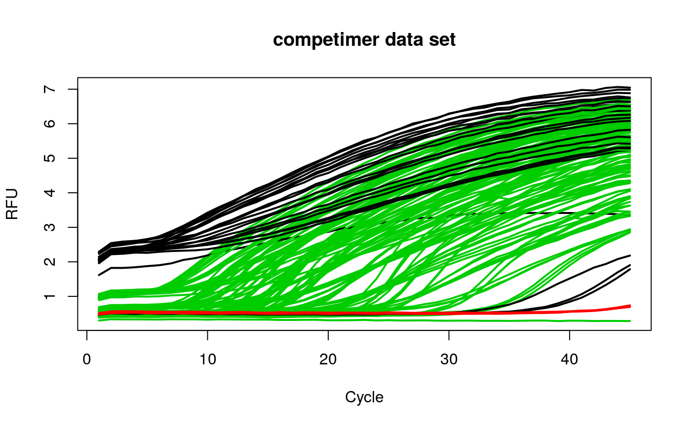

head2tailratio.Rdhead2tailratio is a function to calculate the ratio of the head and the
tail of a quantitative PCR amplification curve. In this test, only the head
(first six cycles) and the tail (last six cycles) form the region of interest
(ROI).
head2tailratio(y, normalize = FALSE, slope_normalizer = FALSE, verbose = FALSE)
| y | is the cycle dependent fluorescence amplitude (y-axis). |
|---|---|
| normalize | is a logical parameter, which indicates if the amplification curve. |
| slope_normalizer | is a logical parameter, which indicates if the head2tailratio should be normalized to the slope of the ROI. |
| verbose | is a logical parameter, which indicates if all the values, parameters and coefficients of the analysis should be shown. |
# calculate head to tail ratio on amplification curve data library(qpcR) res_head2tailratio <- sapply(2:ncol(competimer), function(i) { head2tailratio(y=competimer[, i], normalize=TRUE, slope_normalizer=TRUE) }) res_head2tailratio_cluster <- kmeans(res_head2tailratio, 3)$cluster matplot(competimer[, 1], competimer[, -1], xlab="Cycle", ylab="RFU", main="competimer data set", type="l", lty=1, col=res_head2tailratio_cluster, lwd=2)